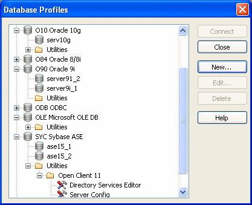
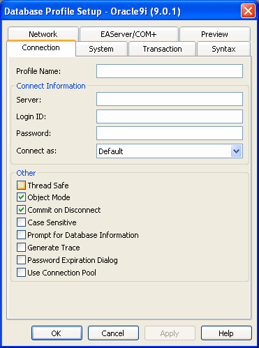

A database profile is a named set of parameters stored in your system registry that defines a connection to a particular database in the PowerBuilder development environment. You must create a database profile for each data connection.
Using database profiles is the easiest way to manage data connections in the PowerBuilder development environment. For example, you can:
For instructions on using database profiles, see Chapter 7, "Managing Database Connections."
You work with two dialog boxes when you create a database profile in PowerBuilder: the Database Profiles dialog box and the interface-specific Database Profile Setup dialog box.
 Using the Database painter to create database profiles You can also create database profiles from the Database painter's
Objects view.
Using the Database painter to create database profiles You can also create database profiles from the Database painter's
Objects view.
The Database Profiles dialog box uses an easy-to-navigate tree control format to display your installed database interfaces and defined database profiles. You can create, edit, and delete database profiles from this dialog box.

When you run the PowerBuilder Setup program, it updates the Vendors list in the PowerBuilder® section in the HKEY_LOCAL_MACHINE registry key with the interfaces you install. The Database Profiles dialog box displays the same interfaces that appear in the Vendors list.
 Where the Vendors list is stored The Sybase\PowerBuilder\10.5\Vendors key
in HKEY_LOCAL_MACHINE\SOFTWARE is
used for InfoMaker as well as PowerBuilder.
Where the Vendors list is stored The Sybase\PowerBuilder\10.5\Vendors key
in HKEY_LOCAL_MACHINE\SOFTWARE is
used for InfoMaker as well as PowerBuilder.
For detailed instructions on using the Database Profiles dialog box to connect to a database and manage your profiles, see Chapter 7, "Managing Database Connections."
Each database interface has its own Database Profile Setup dialog box where you can set interface-specific connection parameters. For example, if you install the O90 interface and then select it and click New in the Database Profiles dialog box, the Database Profile Setup - Oracle 9i dialog box displays, containing settings for those connection options that apply to this interface.

The Database Profile Setup dialog box groups similar connection parameters on the same tab page and lets you easily set their values by using check boxes, drop-down lists, and text boxes. Basic (required) connection parameters are on the Connection tab page, and additional connection options (DBParm parameters and SQLCA properties) are on the other tab pages.
As you complete the Database Profile Setup dialog box in PowerBuilder, the correct PowerScript connection syntax for each selected option is generated on the Preview tab. You can copy the syntax you want from the Preview tab into a PowerBuilder application script.
For some database interfaces, you might not need to supply values for all boxes in the Database Profile Setup dialog box. If you supply the profile name and click OK, PowerBuilder displays a series of dialog boxes to prompt you for additional information when you connect to the database.
For some databases, supplying only the profile name does not give PowerBuilder enough information to prompt you for additional connection values. For these interfaces, you must supply values for all applicable boxes in the Database Profile Setup dialog box.
For information about the values you should supply for your connection, click Help in the Database Profile Setup dialog box for your interface.
To create a new database profile for a database interface, you must complete the Database Profile Setup dialog box for the interface you are using to access the database.
 To create a database profile for a database interface:
To create a database profile for a database interface:
Click the Database Profile button in the PowerBar.
The Database Profiles dialog box displays, listing your installed database interfaces. To see a list of database profiles defined for a particular interface, click the plus sign to the left of the interface name or double-click the interface name to expand the list.
Highlight an interface name and click New.
The Database Profile Setup dialog box for the selected interface displays. For example, if you select the SYC interface, the Database Profile Setup - Adaptive Server Enterprise dialog box displays.
 Client software and interface must be installed To display the Database Profile Setup dialog box for your
interface, the required client software and native database interface
must be properly installed and configured. For specific instructions
for your database interface, see the chapter on using the interface.
Client software and interface must be installed To display the Database Profile Setup dialog box for your
interface, the required client software and native database interface
must be properly installed and configured. For specific instructions
for your database interface, see the chapter on using the interface.
On the Connection tab page, type the profile name and supply values for any other basic parameters your interface requires to connect.
For information about the basic connection parameters for your interface and the values you should supply, click Help.
 About the DBMS identifier You do not need to specify the DBMS identifier
in a database profile. When you create a new profile for any installed
database interface, PowerBuilder generates the correct DBMS connection
syntax for you.
About the DBMS identifier You do not need to specify the DBMS identifier
in a database profile. When you create a new profile for any installed
database interface, PowerBuilder generates the correct DBMS connection
syntax for you.
(Optional) On the other tab pages, supply values for any additional connection options (DBParm parameters and SQLCA properties) to take advantage of DBMS-specific features that your interface supports.
For information about the additional connection parameters for your interface and the values you should supply, click Help.
(Optional) Click the Preview tab if you want to see the PowerScript connection syntax that PowerBuilder generates for each selected option.
You can copy the PowerScript connection syntax from the Preview tab directly into a PowerBuilder application script.
For instructions on using the Preview tab to help you connect in a PowerBuilder application, see the section on using Transaction objects in Application Techniques .
Click OK to save your changes and close the Database Profile Setup dialog box. (To save your changes on a particular tab page without closing the dialog box, click Apply.)
The Database Profiles dialog box displays, with the new profile
name highlighted under the appropriate interface. The database profile
values are saved in the system registry in HKEY_CURRENT_USER\Software\Sybase\PowerBuilder\10.5\
DatabaseProfiles\PowerBuilder.
You can look at the registry entry or export the profile as described in "Importing and exporting database profiles" on page 121 to see the settings you made. The NewLogic parameter is set to True by default. This setting specifies that the password is encrypted using Unicode encoding.